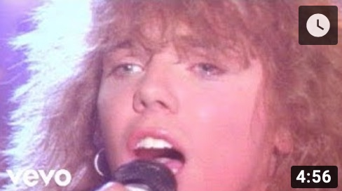
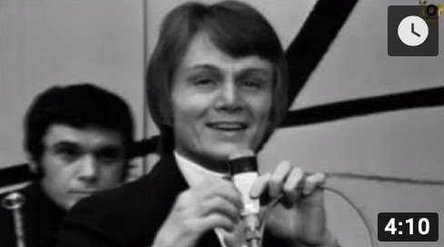
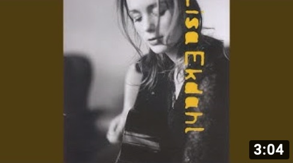
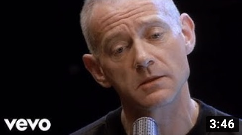
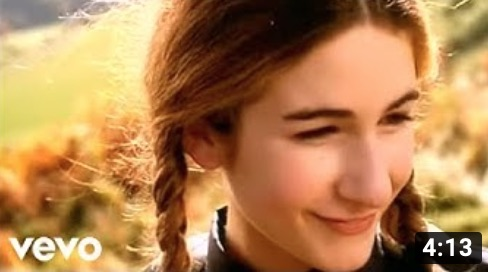
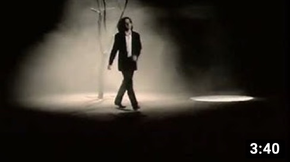
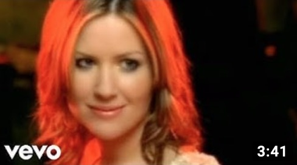
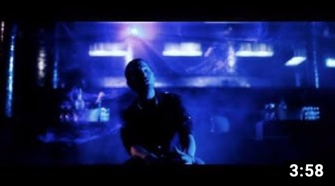
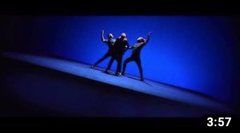

Gruppe 13
Phuong Quyen Pham
Siden høst 2019 er jeg bachelorstudent ved Høgskulen på Vestlandet i Bergen, hvor jeg studerer Informasjonsteknologi.
Jeg går i første semester og har tre fag: Grunnleggende programmering, Diskret matematikk 1 og Ingeniørfaglig yrkesutøvelse og arbeidsmetoder for datafag.
Det er andre gang jeg tar høyere utdanning. Jeg er utdannet ingeniør og har en master i mikroteknikk fra Ecole Polytechnique de Lausanne, Sveits.
Timeplan
Timeplaner er publisert i Timeedit.Gruppen treffes oftest kl.9 for å arbeide sammen med felles innleveringene for ING102.
| kl. | Mandag | Tirsdag | Onsdag | Torsdag | Fredag |
|---|---|---|---|---|---|
| 10-12 | MAT101 Forelesning | DAT100 Forelesning | DAT100 Forelesning | ||
| 12-14 | ING102 Øving | DAT100 Øving | MAT101 Øving | MAT101 Forelsning | |
| 14-16 | ING102 Forelesning | DAT100 Javahjelp | ING102 Forelesning | ||
| 16-17 |
Interesser
Håndarbeid
Håndarbeid er for meg en avslappende og tilfredsstillende aktivitet. Framdrift av arbeidet er synlig med én gang og sluttproduktet er oftest et plagg som man kan ha på seg eller noe som kan brukes i hjemmet.
- Inspirasjon henter jeg fra Facebook grupper, blogger, magasiner:
- Fordelen med håndarbeid er at det lar seg kombinere med andre aktiviteter mens man holder på med det, som for eksempel:
- se på film, serier (ikke på kino på grunn av varierende lysintensitet)
- lytte på lydbøker
- på kjøretur (som passasjer)
- vente, f.eks. på venterom, bussholdeplass, kollektiv transport (buss, bybanen, fly, ferge)
Musikk
Her er noen sanger og radiokanaler som har satt spor på meg
Radio kanaler
- Radio Fribourg: radiofr.ch
- Couleur 3: programmesradio.rts.ch/couleur3
- Radio Norge: radionorge.com
- Helmi radio: helmiradio.fi
Sanger
| Tittel | Sanger | Youtube | Sangerens nettside |
|---|---|---|---|
| The Final Countdown | Europe |  | europetheband.com |
| Comme d'habitude | Claude François |  | Wikipedia |
| Vem vet | Lisa Ekdahl |  | lisaekdahl.com |
| Un homme heureux | William Sheller |  | Wikipedia |
| Ameno | Era |  | Wikipedia |
| Déjeuner en paix | Stephan Eicher |  | stephan-eicher.com |
| White flag | Dido |  | didomusic.com |
| Natteravn | Rasmus Seebach |  | rasmusseebach.dk |
| Christine | Christine and the Queens |  | christineandthequeens.com |